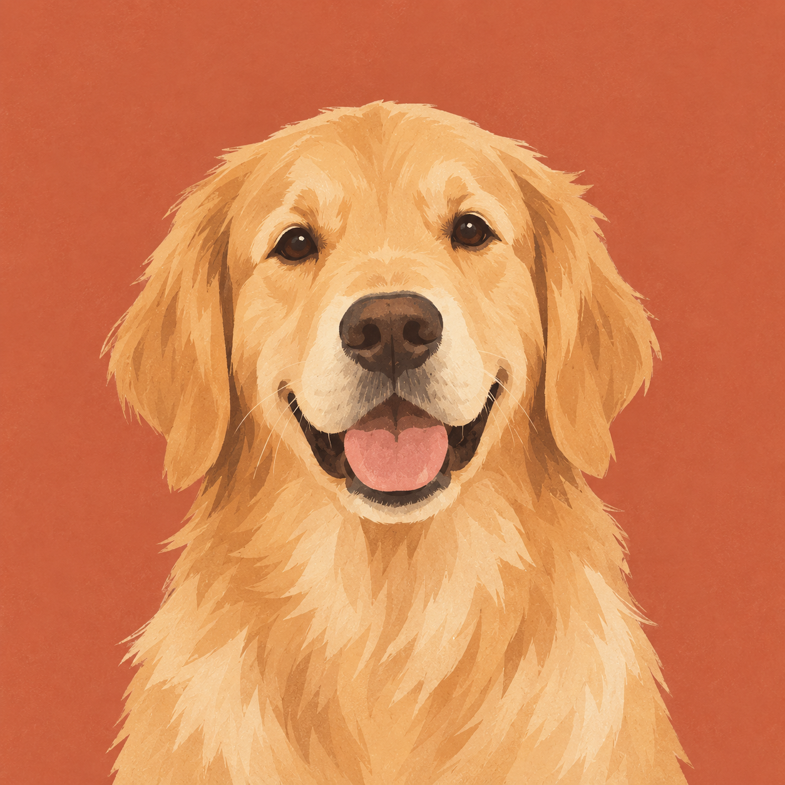

Master’s degree
University of Illinois Urbana Champaign
Computer Science

Master’s degree
Computer Science
Bachelor’s degree
Economics and Computer Science
03
Economics and Computer Science at Brandeis, followed by graduate Computer Science at UIUC.
Software engineering internships at Siemens, NIO, and cybopal.
Academic and professional experience across the United States and China.